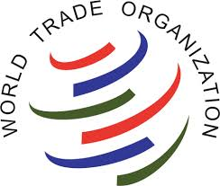
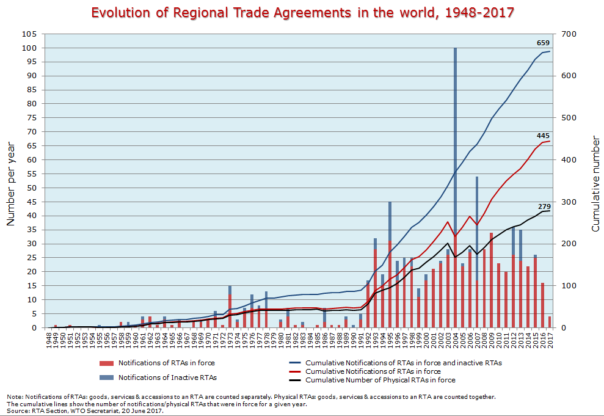
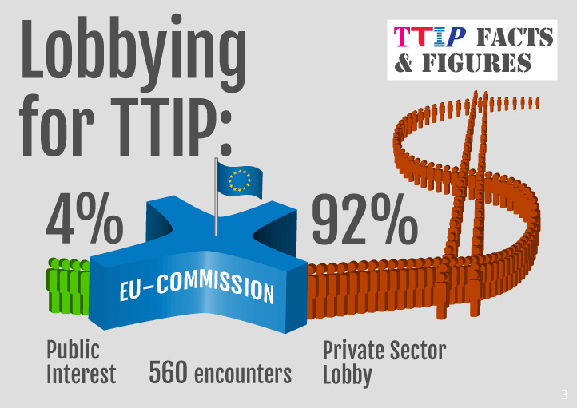
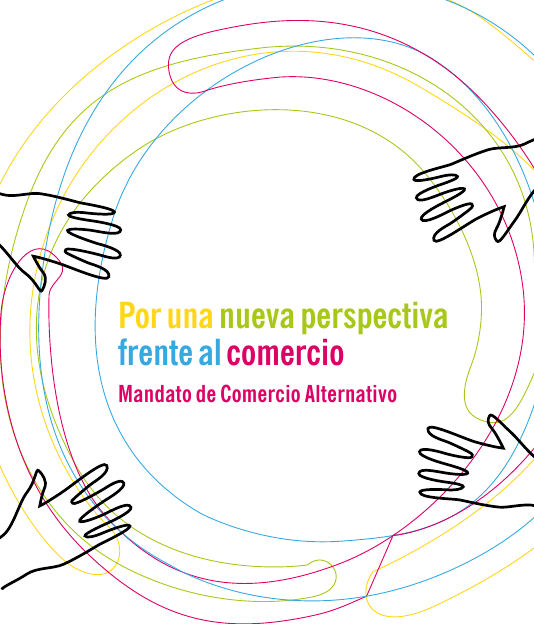
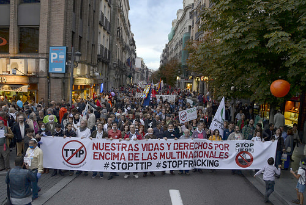

<!doctype html>
<html lang="en">
    <head>
        <meta charset="utf-8">
        <title>Tratados comerciales</title>
        <link rel="stylesheet" href="./css/reveal.css">
        <link rel="stylesheet" href="./css/theme/black.css" id="theme">
        <link rel="stylesheet" href="./css/highlight/zenburn.css">
        <link rel="stylesheet" href="./css/print/paper.css" type="text/css" media="print">
          <link rel="stylesheet" href="./css/custom.css">

    </head>
    <body>

        <div class="reveal">
            <div class="slides"><section  data-markdown><script type="text/template">

<script src="https://ajax.googleapis.com/ajax/libs/jquery/1.12.4/jquery.min.js">__SCRIPT_END__

# Tratados de Libre Comercio, una amenaza para la democracia 


http://empoderarse.es  
</script></section><section  data-markdown><script type="text/template">
## ¿Qué es un Tratado de Libre Comercio (TLC)?

> Un acuerdo entra dos o más partes para garantizar el cumplimiento de unas normas en el intercambio o la compra-venta de productos, bienes o servicios.

¿Es malo un Tratado de Libre Comercio? <!-- .element: class="fragment" -->

<span class="fragment">Los recientes acuerdos comerciales regionales (TTIP, CETA, TISA, etc) **van más allá del ámbito del comercio**. </span>
</script></section><section  data-markdown><script type="text/template">
## La Organización Mundial del Comercio

Encargada de establecer las normas que rigen el comercio mundial.
Eliminación de aranceles y barreras aduaneras. 

Al igual que otras instituciones (BM, FMI, ONU, etc) está controlada por los gobiernos más poderosos y sus empresas transnacionales.

Fracaso de las negociaciones en los últimos años debido a la alianza de los más pequeños (vía campesina).


</script></section><section ><section data-markdown><script type="text/template">
## Evolución de los TLC


</script></section><section data-markdown><script type="text/template">
### TLC activos o en negociación

[](http://ftavis.com/)
</script></section><section data-markdown><script type="text/template">
## Algunos TLC conocidos

- ALCA (América)
- NAFTA (EEUU, Canadá y Méjico)
- Acuerdo Transpacífico EEUU-Asia (sin China)
- CETA (UE-Canadá)
- TISA (Acuerdo de comercio de servicios entre 50 países)
- TTIP (EEUU-UE)
</script></section></section><section  data-markdown><script type="text/template">
## Falta de transparencia y representatividad

- Negociaciones secretas 
- Desequilibrio en la representación del sector público y privado en las negociaciones.


</script></section><section  data-markdown><script type="text/template">
## Cooperación reguladora

- 
</script></section><section ><section data-markdown><script type="text/template">
## Impactos sobre la Soberanía Alimentaria

- Fin del “principio de precaución” en la seguridad alimentaria
- Armonización a la baja de las normativas alimentarias:
    - Mayor permisividad en la entrada de cultivos transgénicos.
    - Legalización de pesticidas y agrotóxicos.
    - Legalización de sustancias químicas para el tratamiento de la carne y el ganado. - Etiquetado menos transparente.
    - Eliminar prohibiciones sobre disruptores endocrinos.
</script></section><section data-markdown><script type="text/template">
### Impactos sobre la Agricultura
</script></section><section data-markdown><script type="text/template">
### Impactos sobre la Ganadería
</script></section></section><section ><section data-markdown><script type="text/template">
## Denominaciones de Origen

- El CETA sólo reconoce 27 de las 246 indicaciones geográficas protegidas en el Estado español.

- En CLM sólo se reconocen 2 de las 30 indicaciones geográficas protegidas. 

- En Canada se podrán producir productos bajo denominaciones que no estén reconicidas en el CETA.
</script></section><section data-markdown><script type="text/template">
### Denominaciones de origen e Indicaciones Protegidas de CLM

|        |   |   |   |   |
|--------|---|---|---|---|
| Aceite de Campo de Montiel | Campo de la Calatrava | Dominio de Valdepusa | Melón de la Mancha | Pago Florentino | 
| Aceite de la Alcarria | Campo de la Guardia | Finca Élez | Méntrida | Pan de cruz de C.Real |
| Ajo morado de las Pedroñeras | Casla del Blanco | Guijoso | Miel de la Alcarria | <span style="color:orange">Queso Manchego</span> |
| Almansa | Castilla | La Mancha | Mondéjar | Ribera del Júcar |
| <span style="color:orange">Azafrán de la Mancha</span> | Cordero manchego | Manchuela | Montes de Toledo | Uclés |
| Berenjenas de Almagro | Dehesa del carrizal | Mazapán de Toledo | Pago Calzadilla | Valdepeñas |
</script></section></section><section  data-markdown><script type="text/template">
## Impactos sobre la salud y los consumidores
</script></section><section  data-markdown><script type="text/template">
## Impactos sobre el Medio Ambiente

- Aumento del cambio climático.
- Emisión de 11 millones de toneladas de CO2 más. 
- Retraso en la reconversión hacia energías renovables. Las petroleras podrán evitar los gravámenes sobre la emisión de CO2.
</script></section><section  data-markdown><script type="text/template">
## Impactos laborales
</script></section><section  data-markdown><script type="text/template">
## Impactos sobre los Servicios Públicos

- Liberalización y privatización de los servicios públicos:
    - Sanidad
    - Educación
    - Agua
- Eliminación de las condiciones que favorezcan a las empresas locales en la adjudicación de contratos públicos (“Buy America”).
- Adopción del planteamiento de “lista negativa” por el cual todos los servicios son liberalizados salvo que se señalen explícitamente como excepciones.
- Indemnizaciones millonarias en caso de renacionalización.
</script></section><section  data-markdown><script type="text/template">
## Impactos sobre las Soberanías

Creación de tribunales de arbitraje internacionales para la resolución de disputas entre inversores y estados (ISDS):

- Formados por abogados corporativistas (no jueces titulados) nada imparciales.
- Las compañías podrán demandar por daños y perjuicios o lucro cesante al estado donde efectúen sus operaciones incluso sin tener contrato directo con este.
-Se evitan los tribunales nacionales

_Se equipara la condición jurídica de las empresas transnacionales con la de los estados, pudiendo cuestionar las decisiones democráticas adoptadas por éstos._
</script></section><section  data-markdown><script type="text/template">
## ¿Cómo defendernos?

<div class="column" style="float:left; width: 50%; text-align:left;">

<p data-markdown>- Promoción del Mandato de Comercio Alternativo elaborado por más de 50 organizaciones europeas y con gran participación ciudadana para garantizar un comercio sostenible que no anteponga los intereses de las empresas a los derechos de las personas y del medio ambiente.</p>
<p data-markdown>- Movilización social y convergencia de luchas</p>

</div>

<div class="right">
 
</div>
</script></section><section  data-markdown><script type="text/template">
## ¡Gracias por su atención!

 
</script></section></div>
        </div>

        <script src="./lib/js/head.min.js"></script>
        <script src="./js/reveal.js"></script>

        <script>
            function extend() {
              var target = {};
              for (var i = 0; i < arguments.length; i++) {
                var source = arguments[i];
                for (var key in source) {
                  if (source.hasOwnProperty(key)) {
                    target[key] = source[key];
                  }
                }
              }
              return target;
            }

            // Optional libraries used to extend on reveal.js
            var deps = [
              { src: './lib/js/classList.js', condition: function() { return !document.body.classList; } },
              { src: './plugin/markdown/marked.js', condition: function() { return !!document.querySelector('[data-markdown]'); } },
              { src: './plugin/markdown/markdown.js', condition: function() { return !!document.querySelector('[data-markdown]'); } },
              { src: './plugin/highlight/highlight.js', async: true, callback: function() { hljs.initHighlightingOnLoad(); } },
              { src: './plugin/zoom-js/zoom.js', async: true },
              { src: './plugin/notes/notes.js', async: true },
              { src: './plugin/math/math.js', async: true },
              { src: './plugin/mathsvg/math.js', async: true },
              { src: './plugin/menu/menu.js', async: true }
            ];

            // default options to init reveal.js
            var defaultOptions = {
              controls: true,
              progress: true,
              history: true,
              center: true,
              transition: 'default', // none/fade/slide/convex/concave/zoom
              dependencies: deps
            };

            // options from URL query string
            var queryOptions = Reveal.getQueryHash() || {};

            var options = {"transition":"convex","center":true};
            options = extend(defaultOptions, options, queryOptions);
        </script>


        <script>
            Reveal.initialize(options);
        </script>
        
    </body>
</html>